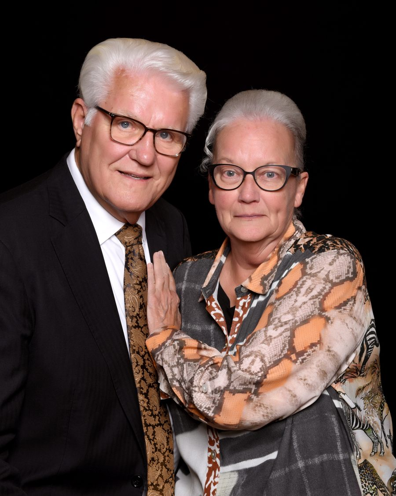

Following.
Proclaiming.
Celebrating.
Rooted in Bakersfield since 1943 — a church that has followed, proclaimed, and celebrated truth for over 80 years.

We believe in a lifestyle committed to loving God holistically — with all your heart, soul, mind, and strength. That lifestyle is centered in the Oneness of God and living out that revelation in completeness.
God calls individuals not only to know Him, but to proclaim His message. Prior to his ascension, Jesus instructed his disciples to wait in Jerusalem until they received power from on high — and they did.
Mark 12:30"And thou shalt love the Lord thy God with all thy heart, and with all thy soul, and with all thy mind, and with all thy strength: this is the first commandment."
Repentance is a change of heart, mind, and life — a turning from sin and a turning toward God. Jesus said, "Except ye repent, ye shall all likewise perish." (Luke 13:3)
Water baptism by immersion in the name of Jesus Christ for the remission of sins — following the pattern of the early church in Acts 2:38, 8:16, 10:47, and 19:5.
The baptism of the Holy Ghost, evidenced by speaking in other tongues as the Spirit gives utterance — the same experience recorded in Acts 2:4 and promised to all who believe.
Rev. I.H. Terry and his wife arrived in Bakersfield on March 5th, 1943. Despite opposition and humble beginnings — no hot water, no song books, pews made from boards and washtubs — they held their first church service on November 13, 1943. The first pulpit was two orange boxes. The altar was Sister Terry's mother's wash bench.
The church moved through several locations before finding a home at 36th and O Street, where the foundation of the church family, ministries, and soul purpose was built through years of hard work and revival. The motto became: "The best place to go is 36th and O."
On the church's 40th anniversary, Rev. Terry retired after four decades of faithful leadership, passing the torch to Bishop Leon Frost — a man raised in the church under Brother Terry himself. Under Bishop Frost's leadership, the church moved to its current home at 1418 W. Columbus Street, debt free.

In November 2010, Kevin Bradford became senior pastor of Greater Bakersfield's First Pentecostal Church. He holds a degree in Business Administration from CSUB and a Master's in Biblical Studies from Fuller Theological Seminary. He has exemplified a true servant's heart with a desire to uphold the church's rich heritage without compromise.

November 2013 marked a momentous occasion — the church's 70th anniversary, Bishop Frost's 30th anniversary of leadership, and Pastor Bradford's 3rd anniversary. Three generations of faithful men, one unbroken foundation: Jesus Christ. Today, GBFPC continues to grow and serve the Bakersfield community.
Our creed, discipline, and doctrine is the Word of God as revealed by the Holy Ghost. We believe the Bible is the inspired and only infallible and authoritative written Word of God. (John 14:26; I Corinthians 2:9-13; II Timothy 3:16-17)
The basic and fundamental doctrine of this organization is the Bible standard of full salvation: repentance, baptism in water by immersion in the name of the Lord Jesus Christ for the remission of sins, and the baptism of the Holy Ghost with the initial sign of speaking with other tongues as the Spirit gives utterance. (Acts 2:38; 8:15-17; 10:44-48; 19:2-6)
Forgiveness of sins is received by obeying the gospel according to Acts 2:38. Water baptism by immersion is for believers who have fully repented, administered in the name of the Lord Jesus Christ. (Acts 2:38; 8:16; 10:47; 19:5; Matthew 28:19)
We believe in the baptism of the Holy Ghost for believers, evidenced by speaking in other tongues as the Spirit gives utterance — the standard of normal Christian experience since Pentecost. (Acts 2:4; 10:46; 19:6)
God is One — manifest as the Father in Creation, as the Son in Redemption, and as the Holy Ghost in the believer individually and the Church collectively. Not three persons, but three simultaneous manifestations of One True God. (Deuteronomy 6:4; Isaiah 9:6; John 1:1-14; Mark 12:29; Ephesians 4:6)
"For the grace of God that bringeth salvation hath appeared to all men, teaching us that, denying ungodliness and worldly lusts, we should live soberly, righteously, and Godly, in this present world." (Titus 2:11-12)
Grace means both God's favor and His enablement to live the Christian life. We are saved by grace through faith — it is the gift of God. (Ephesians 2:8)
There is one Body, one Church, and one way to enter it — by faith, as evidenced by true repentance, water baptism in Jesus' name, and the baptism of the Holy Ghost, which constitutes the new birth. (Ephesians 4:4-6; Acts 2:38-39; John 3:1-11)
The work of the church is to evangelize — to reach the entire world with the Gospel of Jesus Christ. This was expressed by Jesus himself: "Go ye therefore…" (Matthew 28:19) and "…ye shall be witnesses…" (Acts 1:8)
Sanctification means to be set apart unto God for a holy purpose — the result of the Blood, the Word, and the Holy Ghost. It begins with a work of grace and continues in a walk of grace. (Hebrews 13:12; Romans 15:16)
Godly living should characterize every child of the Lord. "For the grace of God that bringeth salvation hath appeared to all men, teaching us that, denying ungodliness and worldly lusts, we should live soberly, righteously, and godly." (Titus 2:11-12)
Whether you're visiting for the first time or returning home, we'd love to have you. Join us any Sunday or Tuesday and experience GBFPC for yourself.